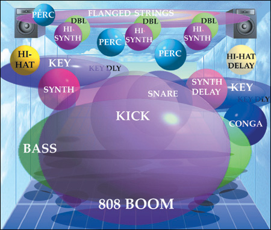

We feel & hear the physical sound waves that come out of the speakers
We imagine the apparent placement of sounds between the speakers
The latter perception of sound offers 3 basic parameters of sound corresponding to the X, Y, Z axes:
X: Panning is the left/right placement of sounds between the speakers.
Y: Frequency is the low/high placement of sounds:
Instruments with high pitches, like cymbals and high strings, seem higher than those of low frequencies, such as bass guitars and kickdrums
Z: Volume is the front/back placement of sounds:
Sounds that are closer to us are louder, and distant sounds are softer.
The Art of Mixing is the creative placement and movement of these sound images. To learn more about imaging sounds, check out David Gibson's Book, "The Art of Mixing"
Axis
Parameter
Location
X
Panning
Left Right
Y
Frequency
Low High
Z
Volume
Front Back

Other Site Review
I liked Dangerous Minds' Website regarding the art of mixing. It has a clear navigation bar, and the content is sectioned off & displayed in such a manner (as opposed to just filling the page).